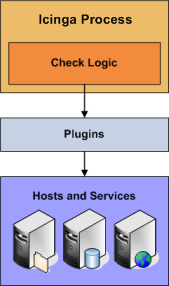

Icinga is capable of monitoring hosts and services in two ways: actively and passively. Passive checks are described elsewhere, so we'll focus on active checks here. Active checks are the most common method for monitoring hosts and services. The main features of actives checks as as follows:
Active checks are initiated by the Icinga process
Active checks are run on a regularly scheduled basis

Active checks are initiated by the check logic in the Icinga daemon. When Icinga needs to check the status of a host or service it will execute a plugin and pass it information about what needs to be checked. The plugin will then check the operational state of the host or service and report the results back to the Icinga daemon. Icinga will process the results of the host or service check and take appropriate action as necessary (e.g. send notifications, run event handlers, etc).
More information on how plugins work can be found here.
Active check are executed:
At regular intervals, as defined by the check_interval and retry_interval options in your host and service definitions
On-demand as needed
Regularly scheduled checks occur at intervals equaling either the check_interval or the retry_interval in your host or service definitions, depending on what type of state the host or service is in. If a host or service is in a HARD state, it will be actively checked at intervals equal to the check_interval option. If it is in a SOFT state, it will be checked at intervals equal to the retry_interval option.
On-demand checks are performed whenever Icinga sees a need to obtain the latest status information about a particular host or service. For example, when Icinga is determining the reachability of a host, it will often perform on-demand checks of parent and child hosts to accurately determine the status of a particular network segment. On-demand checks also occur in the predictive dependency check logic in order to ensure Icinga has the most accurate status information.
© 1999-2009 Ethan Galstad, 2009-2017 Icinga Development Team, https://www.icinga.com